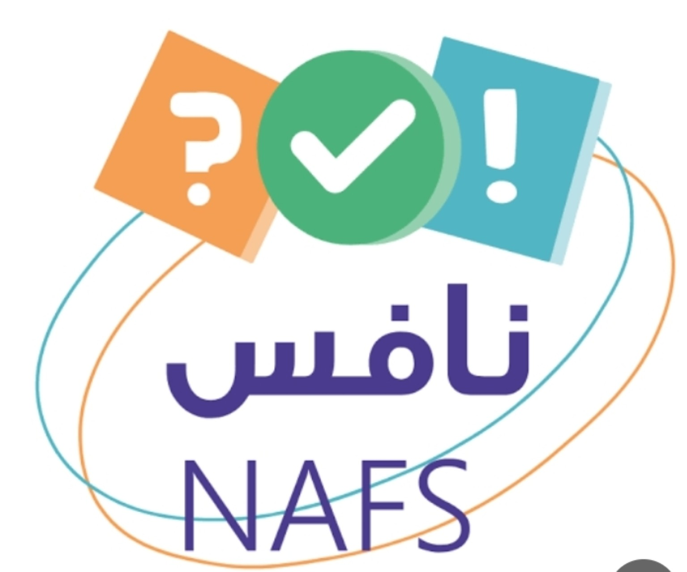

علوم الصف الثالث المتوسط · إعداد مدرسة أبي الدرداء المتوسطة
إدارة الطلاب، الباركود، التقارير، وسجل ملف الإنجاز
| الطالب | الفصل | حالة الدخول | آخر دخول | آخر نشاط/إنهاء | التدريبات | الاختبار | آخر نسبة | تقرير |
|---|
| الطالب | الفصل | الكود | آخر دخول | آخر نشاط | الإجراءات |
|---|
| الطالب | الفصل | دخل المنصة | تاريخ ووقت الدخول | آخر نشاط/إنهاء | عدد النتائج |
|---|
إضافة، تعديل، إخفاء، واستعادة الأسئلة، وتحديد استخدامها في التدريب أو الاختبار.
| الرمز | المجال | السؤال | الصعوبة | تدريب | اختبار | الحالة | الإجراءات |
|---|
التحكم كامل للمعلم: الطلاب يرون فقط التكليف المفتوح لهم بالباركود.
| التكليف | النوع | الفصل/الطلاب | الأسئلة | يفتح | يغلق | الحالة | المشاركة | الإجراءات |
|---|
اقتراحات تلقائية من أحدث أداء: أقل من 60% يحتاج دعمًا علاجيًا، و85% فأعلى يمكن إسناد نشاط إثرائي له. القرار النهائي للمعلم.
| الطالب | الفصل | آخر أداء | المجال الأضعف | الاقتراح | إجراء المعلم |
|---|
يُنشأ تلقائيًا من أحدث بيانات المنصة، ويشمل الفكرة والأهداف وآلية العمل والإحصاءات والشواهد الرقمية والأثر التعليمي.